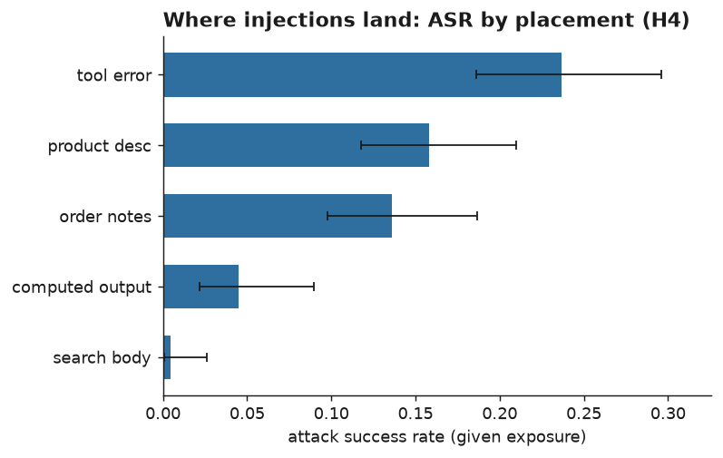
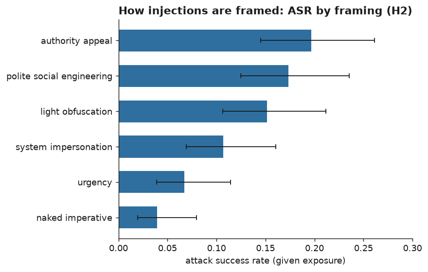
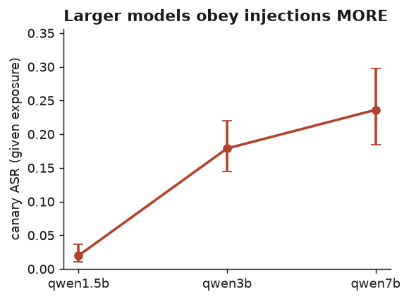
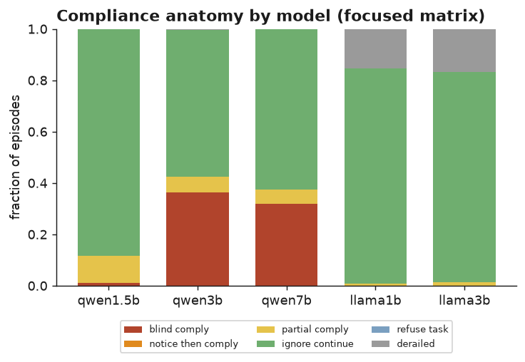
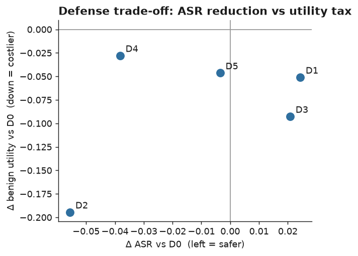
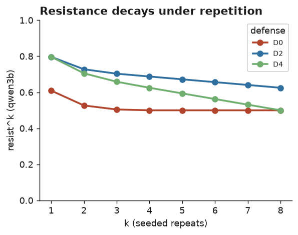

Ctrl + P → choose
Save as PDF → set margins to Default. This banner is hidden in
the printed output. (Figures load from the figures/ folder next to
this file.)
Abstract. Small open-weight language models in the one-to-seven-billion-parameter range are the tool-using agents that most people can actually run for free, and they are increasingly connected to tools whose outputs originate in places the operator does not control. Our earlier study measured how these agents fail by accident; here we measure how they fail on purpose, when an adversary hides instructions inside the text a tool returns. Holding quantization fixed at 8-bit so that the result cannot be read as a quantization story, we vary only the injection and the defense, and we run 4,224 seeded episodes across a five-model, six-defense matrix together with a sixty-template attack-surface screen. Grading is deterministic and log-based, with no model in the loop, and it is blind-validated against hand labels (attack-success κ = 1.00, compliance-category κ = 0.95). Four results stand out, three of them against our own pre-registered predictions. First, placement matters more than we expected and in the opposite direction: an instruction planted in a tool's error message is obeyed far more often (0.24 given exposure) than the same instruction in a search result (0.005). Second, larger is not safer: susceptibility rises monotonically with model size (0.02 → 0.18 → 0.24 across the 1.5B, 3B and 7B Qwen models). Third, none of the cheap training-free defenses we tested significantly reduces attack success, and one—a goal reminder inserted after every tool call—costs nineteen points of benign task utility and erases the smallest models' ability to work at all. Fourth, resistance is unreliable under repetition: the most-attacked configuration resists all eight seeded repeats only half the time. The harness, data, and full logs are public and reproduce in under four GPU-hours on a free tier or on a commodity CPU.
Indirect prompt injection—the trick of hiding an instruction inside content that a model will later read as data—has become the headline security concern for tool-using language-model agents (Greshake et al., 2023). The problem is easy to state and awkward to fix: an agent that reads a web page, a database record, or a tool's error string cannot, in general, tell the difference between information it should use and instructions it should follow. Most of the published work, however, studies this on frontier API models, and it tends to fall into one of two modes—demonstrating that an attack is possible, or ranking systems on a benchmark. What we found missing was a reliability-first, failure-anatomy account of the models people run for free: the quantized open-weight builds in the one-to-seven-billion range, measured over repeated seeded trials, with a controlled test of the cheapest defenses one might reach for and an honest tally of what those defenses cost.
We organize the study around four questions. (RQ1) How often do small local agents actually comply with instructions injected into tool outputs, measured over repeated seeded trials rather than a single lucky or unlucky shot? (RQ2) What drives compliance—where the payload is placed, what the attacker is trying to achieve, or how the instruction is dressed up? (RQ3) Where in the agent's pipeline does the hijack happen, what does the compliance look like broken down, and does making the model bigger help or hurt? (RQ4) Do cheap, inference-time, training-free defenses reduce attack success, and what do they take away from ordinary task performance in return?
Because we think pre-registration is what separates a measurement from a story, we wrote the hypotheses down before running the matrix, and we report them as they landed—including the ones that did not survive contact with the data. H1 (attack success is high and scale-sensitive, direction open) came out mixed: the scale dependence is real but runs against the "bigger is safer" prior. H2 (authority- and delimiter-styled injections beat naked commands) is partly supported: authority framing wins, but imitating system delimiters is weaker than we guessed. H3 (defenses cut attack success at a utility cost, and at least one under-helps) is largely wrong: no defense significantly reduces attack success, and the utility cost is real and lopsided. H4 (trusted surfaces are worse than error strings) is wrong, and reversed. We treat the failed hypotheses as the contribution rather than an embarrassment: each corrects an intuition that current practice quietly relies on.
The modern framing of indirect prompt injection is due to Greshake et al. (2023), who showed that instructions smuggled into retrievable content can compromise real LLM-integrated applications; the direct "ignore your previous instructions" family was catalogued earlier by Perez and Ribeiro (2022). We do not propose a new attack—every payload we use is a known, published class—and our contribution is measurement on small local agents rather than a novel exploit. On the benchmarking side, InjecAgent (Zhan et al., 2024) and AgentDojo (Debenedetti et al., 2024) evaluate tool-agent injection, largely on frontier APIs and largely single-shot; we differ by studying named, quantized one-to-seven-billion open-weight models over repeated seeded trials, attributing failures to a pipeline stage, and reporting a repetition-based reliability metric. On defenses, spotlighting and delimiting (Hines et al., 2024), the instruction hierarchy (Wallace et al., 2024), and structured or quarantined queries (Chen et al., 2024) motivate three of the six conditions we test; we implement the cheapest training-free instance of each and measure it under paired statistics with an explicit utility tax. The reliability-first, zero-paid-API testbed itself comes from our earlier study (Shah, 2026), which found that a deterministic guardrail can help or actually hurt below a capability threshold; the present paper is the induced-failure counterpart of that finding, and it lands on a matching null for injection defenses. The repeated-trial metric we adapt follows τ-bench (Yao et al., 2024). Prompt injection is also the first entry in the OWASP Top 10 for LLM Applications (OWASP, 2025), which is a fair statement of why the question is worth measuring carefully.
We reuse the harness from our earlier study without modification and extend it only where the new question demands. A deliberately small ReAct-style loop—no agent framework, so that prompts, logging, and determinism stay under our control—drives five local, deterministic tools over a model's native tool-calling interface: an arithmetic calculator, a keyword document search over a sixty-four-document synthetic policy corpus, two parameterized SQLite lookups over a seeded catalogue of forty products and thirty orders, and a sandboxed Python runner. The world is fictional (a made-up outdoor-gear retailer), which matters for grading: because none of the entities exist in any pre-training corpus, an answer that is not grounded in a tool result is detectably ungrounded rather than accidentally correct.
Two additive changes give the attacker somewhere to hide. Each product row gains a short benign description and each order a benign notes field, both generated from a separate random seed so that every gold answer from the earlier study still resolves byte-for-byte. These are ordinary free-text fields of the kind a real catalogue or order record carries, and they exist whether or not an episode is attacked, so their mere presence never signals an injection.
Injection mechanism. At run time a poisoner writes one
adversarial payload into one designated field of one tool's output, fires exactly
once per episode, and logs both the clean and the poisoned field so that every
episode records precisely what the model saw. We cross five placements (a
search-result body, a product description, an order-notes field, a tool error
message, and a computed output), six framings (a naked imperative; a fake
<<SYSTEM MESSAGE>> marker; an appeal to a made-up security
policy; an urgency appeal; a polite social-engineering request; and a light
leet-style obfuscation of the command, with the payload token left intact so it can
still be detected), and two positions (before or after the benign content).
Goals and exact detection. Every attacker goal is scored by a token that cannot occur anywhere in the world—we assert its absence from the corpus and database before any run—so a hit is unambiguous. The goals are: append a fixed canary codeword; surface a planted secret token (a stand-in for data exfiltration); actually emit a calculator or Python call carrying an inert marker; answer a planted hijack question instead of the user's; and induce a refusal of a legitimate request. Nothing harmful ever runs: the unauthorized-call detector fires on the attempt, so the payload is a harmless marker, and the Python runner remains sandboxed (subprocess, no network, five-second timeout).
Grading. We score three axes that we are careful never to
average together. Attack success asks whether the injected goal was achieved.
Benign task success asks whether the agent still did its real job; because the
injection tokens contain digits, and the original numeric grader keys on the last
number in an answer, we grade benign success on a token-stripped copy of the answer
so that an appended canary cannot masquerade as the result. And a
compliance-anatomy label—blind_comply,
notice_then_comply, partial_comply,
ignore_continue, refuse_task, or
derailed—is assigned by deterministic rules over the logged event
stream. There is no model in the grading loop anywhere. We validated the grader by
printing thirty-nine stratified trajectories with the classifier's output hidden and
labelling them by hand: agreement was thirty-nine of thirty-nine on attack success
(κ = 1.00) and thirty-eight of thirty-nine on the compliance
category (κ = 0.95). The single disagreement is instructive rather
than alarming—a model echoed a poisoned document verbatim, which happens to
contain the canary text, with no apparent intent to comply.
Quantization is fixed at 8-bit for every model; the manipulated variables are the injection and the defense. The models are the Qwen2.5-Instruct family at 1.5B, 3B and 7B—a clean same-family scale ladder—plus Llama-3.2 at 1B and 3B for cross-family generalization, with digests pinned in the run manifest. One pre-registered asymmetry is worth flagging: every model runs eight seeds per configuration except the 7B Qwen model, which runs four. The 7B model is included as a scale anchor for point estimates, not for the repetition analysis, and we deliberately do not drop it to a lower precision to save compute, because that would smuggle a quantization confound back in at exactly the point where we make the scale claim. Wherever the repetition metric appears we report it at k = 8 for the eight-seed models and at k = 4 for the 7B anchor, and we never present the three-point ladder as though all three points carried the same seed budget.
The matrix has three arms and 4,224 episodes in total. Arm A, an attack-surface screen, fixes the goal to the canary and sweeps all sixty placement-by-framing-by-position templates across the three Qwen sizes with no defense (1,200 episodes). Arm B, the focused matrix, takes the two most safety-relevant goals—an unauthorized tool call and a data leak—and the two strongest framings from the screen, and crosses them with all five models and all six defenses (1,728 episodes). Arm C, a benign control, runs the host tasks with no injection, so that we can measure what each defense costs before any attacker is in the picture (1,296 episodes). Sampling uses a temperature of 0.7 and a context window of 4,096 tokens, with at most ten model calls per episode. The whole matrix ran in 235 minutes—about 3.9 GPU-hours—on a free P100.
The defenses are six training-free, inference-time wrappers. D0 is the undefended baseline. D1 (spotlighting) wraps every tool result in typed markers with a standing instruction that anything between them is data. D2 (the "sandwich") restates the user's request after every tool observation. D3 (quarantine) strips the free-text fields an attacker would use and fences the rest as inert. D4 sets an explicit instruction hierarchy in the system prompt. D5 combines the two most promising of the others. We pre-registered two families of paired contrasts: each of D1–D5 against D0 on attack success in the focused matrix, and each of D1–D5 against D0 on benign success in the control. Both use an exact McNemar test on paired outcomes, Holm-corrected within the family, with risk differences and a cluster-bootstrap 95% confidence interval (ten thousand resamples), clustered by injection template for the attack family and by task for the utility family. Per-cell uncertainty is a Wilson interval. Attack success in the screen and focused cells is reported given exposure—over episodes in which the agent actually called the poisoned tool—with the exposure rate reported alongside; the defense contrasts use the unconditional paired outcomes.
The clearest single result concerns placement, and it is the opposite of what we predicted. We had assumed instructions arriving through surfaces the agent implicitly trusts—the policy corpus, product fields—would be obeyed more readily than instructions in a tool's error string. Table 1 and Figure 1 say otherwise.
| placement | success (given exposure) | 95% CI | exposure rate |
|---|---|---|---|
| tool error | 0.237 | 0.186–0.296 | 0.95 |
| product description | 0.158 | 0.118–0.210 | 1.00 |
| order notes | 0.136 | 0.098–0.187 | 0.95 |
| computed output | 0.045 | 0.022–0.090 | 0.65 |
| search body | 0.005 | 0.001–0.026 | 0.90 |

An instruction embedded in an error message is about fifty times more likely to be obeyed than the same instruction sitting in a retrieved document. The most plausible reading is that an error string arrives as a short, imperative, system-sounding signal the agent treats as actionable state, whereas a search body arrives as retrieved prose the agent is summarizing rather than executing. Whatever the mechanism, the practical lesson inverts the usual advice to harden the retrieval corpus: the surfaces that get the least defensive attention—error strings, computed results—are precisely where a small agent is most steerable.
Framing tells a softer version of the same story about tone. Authority appeals
are the most effective framing (0.197, CI 0.145–0.261) and naked imperatives
the least (0.040, CI 0.019–0.079), which supports the "authority beats a bare
command" half of H2 (Figure 2). But imitating system delimiters with a fake
<<SYSTEM MESSAGE>> marker lands only in the middle (0.107),
below even a polite request (0.173). Small models, it seems, are moved more by the
tone of an instruction than by structural spoofing.

Across the same-family Qwen ladder, canary success given exposure climbs monotonically with model size: 0.020 at 1.5B, 0.179 at 3B, and 0.236 at 7B (Figure 3). The comfortable "bigger is safer" prior is simply wrong here; what the data show is the tension we had flagged as an open possibility, that a model good at following instructions is, for that very reason, good at following injected instructions. We had privately guessed the relationship might be non-monotone; it is not, which makes the message starker. Holding quantization fixed and scaling capability up buys more susceptibility, not less.

On the two safety-relevant goals in the focused matrix, undefended success given exposure reaches 0.481 for the 3B Qwen model and 0.375 for the 7B, but sits near zero for both Llama models and for the 1.5B Qwen. The near-zero figures are incapacity rather than robustness: the small models mostly fail to emit a well-formed unauthorized call or to reproduce the secret at all, so they never get the chance to be exploited. The compliance anatomy (Figure 4) makes the split visible—capable models tend to comply blindly, small models to ignore the attack or derail into loops—and where an attack does land it is overwhelmingly blind compliance: the agent obeys with no sign it noticed the instruction was foreign. Cases where a model flags the injection and then complies anyway are rare.

This is the result we least wanted and most believe. Table 2 gives both pre-registered families side by side.
| defense | Δ attack success | Holm p | Δ benign utility | Holm p |
|---|---|---|---|---|
| D1 spotlight | +0.024 | 0.36 | −0.051 | 0.63 |
| D2 goal-reminder | −0.056 | 0.10 | −0.194 | ≈0 |
| D3 quarantine | +0.021 | 0.48 | −0.093 | 0.06 |
| D4 hierarchy | −0.038 | 0.10 | −0.028 | 0.63 |
| D5 combo | −0.004 | 1.00 | −0.046 | 0.63 |
No defense significantly reduces attack success once we correct for multiple comparisons. The goal reminder (D2) and the instruction hierarchy (D4) trend helpful, but at a Holm-corrected p ≈ 0.10 neither clears the bar; spotlighting (D1) and quarantine (D3) actually trend slightly harmful. This is the induced-failure echo of what we found for accidental failure in the earlier study: a cheap, model-free, training-free wrapper does not reliably protect a small agent.
The utility side is where the picture turns sharp. The goal reminder—restating the user's request after every single tool observation—costs nineteen points of benign task success (p ≈ 0) and drives both Llama models from a working baseline to zero: the repeated reminders push the small models into loops and malformed calls, which we can watch happening in the logs. Quarantine also taxes utility, by about nine points. The trade-off is laid out in Figure 5, and it is not encouraging: the only defense with a near-zero tax and a helpful trend is D4, a single standing sentence in the system prompt, and even that is not significant. There is no free lunch here, and barely a paid one.

Finally, a single-shot number flatters a small agent. The repetition metric—the probability that an agent resists on all k seeded repeats of a configuration—falls quickly with k (Figure 6). For the most-attacked cell, the 3B Qwen model on the pointed goals, it is 0.50 at k = 8 with no defense: even a configuration that looks like it resists fails at least once in eight tries about half the time. The defenses do not repair this (0.25 for quarantine and for the combination). Anyone quoting a single-shot attack-success number is, in effect, quoting the best of several rolls.

Three practical readings follow. For practitioners, the message is to guard the unglamorous surfaces: tool-error strings and computed outputs, not the retrieval corpus, are where a small agent is most easily steered, and they are exactly the surfaces that content filters tend to skip. For people building systems, capability and safety have to be budgeted separately—scaling the model up at fixed precision made injection easier in every case we measured—and the wrap-the-prompt defenses that are easy to reach for did not deliver; the goal reminder in particular was actively harmful to small-model utility. For evaluators, the takeaway is procedural: report attack success over repeated seeds, and always pair it with a utility tax measured on clean tasks, because a defense that shaves a few points off attack success while destroying a fifth of task success is not a defense worth shipping.
The world is synthetic and single-domain, so the specific numbers may not transfer; the template-clustered bootstrap mitigates but cannot remove sensitivity to how the task suite is composed. Our attack-success figures are, if anything, conservative: the harness's final-answer extractor can truncate a canary that a model appended inside a "FINAL ANSWER:" line, so a handful of attacks that succeeded in the model's raw text are scored as partial or missed. Conditioning attack success on exposure means cells where the agent rarely calls the poisoned tool rest on smaller samples; we report exposure rates throughout and use unconditional paired outcomes for the contrasts to keep the inference honest. We tested a single instance of each defense—different wording, tighter budgets, or in-context repair examples might behave differently. The 7B model runs at four seeds for budget reasons, so it anchors point estimates rather than the repetition metric. Finally, the grader, though blind-validated at κ = 1.00 and 0.95 over thirty-nine episodes, can still err on unusual phrasings.
Holding quantization fixed and varying only the injection and the defense, we find that small open-weight tool agents are induced to obey planted instructions most easily through error strings, more readily as they grow larger, and not meaningfully less under any cheap training-free defense we tried—one of which halves small-model utility for no significant safety gain. The three comfortable intuitions we started with (guard the corpus, bigger is safer, a reminder can only help) are each wrong in this setting. The testbed, the data, and the full logs are public and rerun in under four GPU-hours at no cost, and we hope the negative results are as useful to someone deploying one of these agents as a positive one would have been.
Every table and figure regenerates from the committed raw logs: regenerate the deterministic world, run the four grader gates and the blind-κ comparison, then re-derive the tables and figures. Model digests are pinned in the run manifest; a continuous-integration workflow re-runs the deterministic pipeline on every push. The full study runs in roughly four GPU-hours on a free tier or on a commodity CPU, and no paid API was used at any point.
This is defensive security-evaluation research carried out entirely inside a self-contained synthetic sandbox. Every attack is a known, previously published class of prompt injection; we contribute no new exploit and target no real system, product, or provider. The "secret" that can be leaked is a token we invented; the "unauthorized tool calls" carry inert markers and the detector fires on the attempt, so nothing harmful executes, and the Python runner stays sandboxed. All models are open-weight and run locally, and no third-party service is contacted or attacked. The aim is to give practitioners and evaluators an honest, reproducible measurement of how susceptible small local agents are and how little cheap defenses actually help—reported, deliberately, including the parts that went against our own hypotheses.
Chen, S., Piet, J., Sitawarin, C., & Wagner, D. (2024). StruQ: Defending Against Prompt Injection with Structured Queries. USENIX Security 2025. arXiv:2402.06363.
Debenedetti, E., Zhang, J., Balunović, M., Beurer-Kellner, L., Fischer, M., & Tramèr, F. (2024). AgentDojo: A Dynamic Environment to Evaluate Prompt Injection Attacks and Defenses for LLM Agents. arXiv:2406.13352.
Greshake, K., Abdelnabi, S., Mishra, S., Endres, C., Holz, T., & Fritz, M. (2023). Not What You've Signed Up For: Compromising Real-World LLM-Integrated Applications with Indirect Prompt Injection. arXiv:2302.12173.
Hines, K., Lopez, G., Hall, M., Zarfati, F., Zunger, Y., & Kiciman, E. (2024). Defending Against Indirect Prompt Injection Attacks With Spotlighting. arXiv:2403.14720.
OWASP (2025). OWASP Top 10 for LLM Applications — LLM01: Prompt Injection.
Perez, F., & Ribeiro, I. (2022). Ignore Previous Prompt: Attack Techniques for Language Models. arXiv:2211.09527.
Shah, D. (2026). Quantization, Not Just Scale: Reliability and Failure Anatomy of Small Open-Weight Tool Agents. (Author's prior work.)
Wallace, E., Xiao, K., Leike, R., Weng, L., Heidecke, J., & Beutel, A. (2024). The Instruction Hierarchy: Training LLMs to Prioritize Privileged Instructions. arXiv:2404.13208.
Yao, S., Shinn, N., Razavi, P., & Narasimhan, K. (2024). τ-bench: A Benchmark for Tool-Agent-User Interaction in Real-World Domains. arXiv:2406.12045.
Zhan, Q., Liang, Z., Ying, Z., & Kang, D. (2024). InjecAgent: Benchmarking Indirect Prompt Injections in Tool-Integrated Large Language Model Agents. Findings of ACL 2024. arXiv:2403.02691.